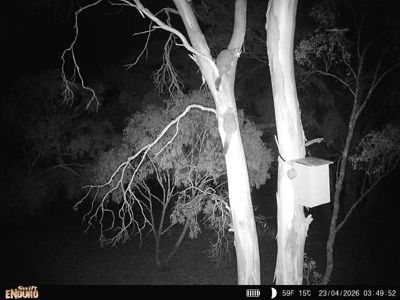

Deciding whether you need boxes
Nest boxes are the most popular post-fire intervention going, and the easiest to get wrong. They are satisfying to build, easy to fund, and visible from the driveway. None of that makes them necessary on your particular block.
The question worth answering first is not what boxes should I put up but does this place actually need them. There are two ways to find out, and they work well together.
Route one: count your hollows
The direct approach is to find out how many hollow-bearing trees you have and where they are. Two people can survey a plot in an hour or two, and the method is simple enough to teach on the spot — several of our landholders learnt it by joining in.
Protocol — hollow-bearing tree transect1
- What you need
- A 100 m measuring tape, a shorter tape, binoculars, and something to record on. Two people.
- Where
- Pick two areas of about two hectares each, in the parts of the block you most want to know about. Mark the corners so you can find them again — star pickets work. Two plots lets you compare, which is the whole point.
- Before you start
- Walk through the middle of the plot and form a general impression: what vegetation type is this, how old are the trees, how hard did the fire hit here? Write it down. It takes two minutes and it is what makes the numbers mean something later.
- Setting the transect
- Lay the 100 m tape through a part of the plot that fairly represents the whole thing. Resist the temptation to run it past the best trees.
- The survey
- One person walks each side of the tape, each covering the ground out to 10 m from it. Between you that is a band 20 m wide and 100 m long — a fifth of a hectare. Record every hollow-bearing tree inside it, using binoculars to see the hollows properly.
- For each tree, record
-
- Number of hollows with entrances under 5 cm — small parrots, microbats, small marsupials
- Number 5 to 10 cm — larger parrots, possums, owlet-nightjars
- Number over 10 cm — cockatoos, owls, large possums
- Trunk diameter at breast height
- Working out the answer
- Multiply your plot count by five to get hollow-bearing trees per hectare. Then compare your two plots. The one with fewer is where boxes will do the most good.
The number itself is less important than the comparison and the habit. Walking a transect makes you look up, and most people find things on their own place they had walked past for years.
Route two: let the animals answer
There is a simpler test, and in some ways a better one. Put up a few boxes — not thirty, a handful, in two or three designs — and watch what happens.
If they get used, the demand is real and more are worth putting up. If they sit empty through a couple of seasons, there aren’t the animals looking yet, and your money and weekends are better spent on weeds, pest control or protecting the trees you still have.
This is a slower answer than a transect, but it is a truer one. A box is only habitat if something moves into it.

Why we’d do both
The two routes answer different questions. The occupancy trial tells you whether boxes are needed. The transect tells you where they should go, and gives you something to compare against in ten years.
More than that, the transect replaces guessing with a feel for your own block — which trees carry hollows, what size, and where the gaps are. That knowledge outlasts any box.
Across nine properties we surveyed twenty plots and found fifty-nine hollow-bearing trees between them — a thin result, and the reason nest boxes were a priority for this project at all. At each property we compared the two plots and put the boxes in the one with fewer hollows.
The follow-up matters as much as the survey. Several landholders have since begun expanding their own box programs beyond what we supplied, based on what they saw getting used.1
The transect layout: 100 m tape, two observers, the 20 m band, and the three hollow size classes with the animals that use each.
To be drawn.